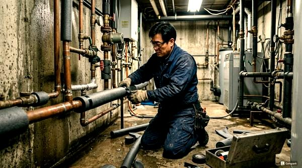
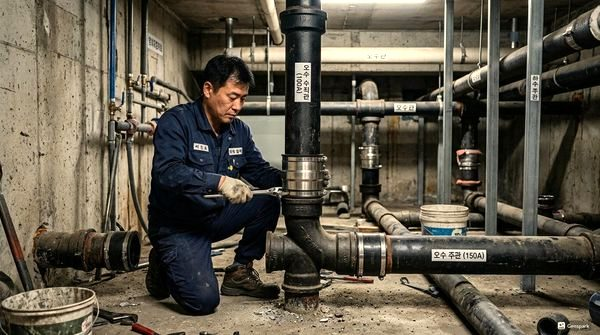
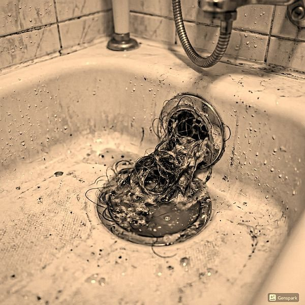

배관 동결 시 응급 대처법 - 겨울철 필수 가이드
2026년 4월 12일 | 제우스시설관리

겨울철 영하 10도 이하로 기온이 떨어지면 배관 동결 사고가 급증합니다. 특히 외벽에 노출된 배관이나 보온재가 부실한 구간은 동파 위험이 매우 높습니다. 제우스시설관리는 전문 해빙 장비로 28분 내 출동하여 동결 배관을 안전하게 복구합니다.
배관이 동결되었다고 의심되면 먼저 수도꼭지를 살짝 열어두세요. 절대로 토치나 직접 화기로 배관을 가열하면 안 됩니다. 급격한 온도 변화로 배관이 파열될 수 있습니다. 드라이어의 온풍을 이용하거나, 따뜻한 수건을 감싸는 방법이 안전합니다.

전문 해빙 장비는 전기 해빙기와 스팀 해빙기 두 종류가 있습니다. 전기 해빙기는 배관에 전류를 흘려 저항열로 해빙하며, 스팀 해빙기는 고온의 증기를 배관 내부로 주입하여 얼음을 녹입니다. 두 장비 모두 전문 기술자만 안전하게 사용할 수 있습니다.
동결 후에는 반드시 배관 상태를 점검해야 합니다. 눈에 보이지 않는 미세한 균열이 있을 수 있으며, 이는 추후 누수의 원인이 됩니다. 제우스시설관리는 관로탐지기와 내시경 카메라로 배관 내부를 정밀 진단합니다.

예방이 최선입니다. 외부 배관에 보온재를 감싸고, 장기 외출 시에는 수도꼭지를 실처럼 가늘게 틀어두세요. 보일러 동파방지 기능을 활성화하고, 계량기함에 헌 옷이나 스티로폼을 채워 넣는 것도 효과적입니다.